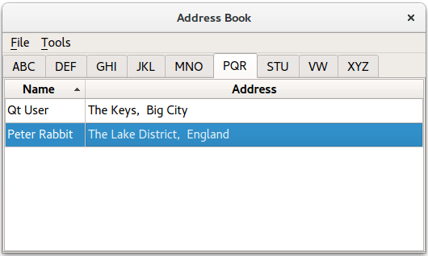
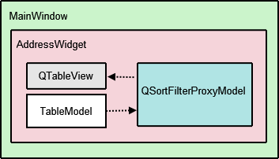
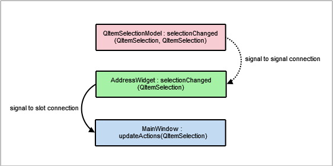
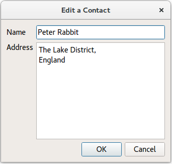
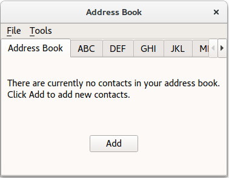
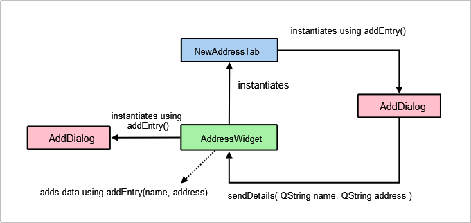
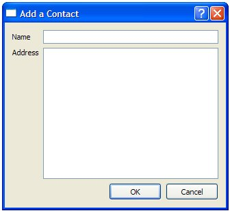
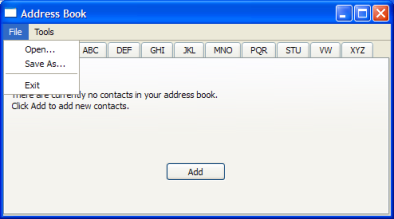
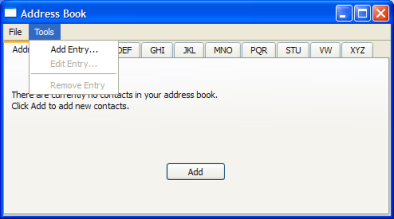

Address Book Example
The address book example shows how to use proxy models to display different views onto data from a single model.

This example provides an address book that allows contacts to be grouped alphabetically into 9 groups: ABC, DEF, GHI, ... , VW, ..., XYZ. This is achieved by using multiple views on the same model, each of which is filtered using an instance of the QSortFilterProxyModel class.
Overview
The address book contains 5 classes: MainWindow, AddressWidget, TableModel, NewAddressTab and AddDialog. The MainWindow class uses AddressWidget as its central widget and provides File and Tools menus.

The AddressWidget class is a QTabWidget subclass that is used to manipulate the 10 tabs displayed in the example: the 9 alphabet group tabs and an instance of NewAddressTab. The NewAddressTab class is a subclass of QWidget that is only used whenever the address book is empty, prompting the user to add some contacts. AddressWidget also interacts with an instance of TableModel to add, edit and remove entries to the address book.
TableModel is a subclass of QAbstractTableModel that provides the standard model/view API to access data. It holds a list of added contacts. However, this data is not all visible in a single tab. Instead, QTableView is used to provide 9 different views of the same data, according to the alphabet groups.
QSortFilterProxyModel is the class responsible for filtering the contacts for each group of contacts. Each proxy model uses a QRegExp to filter out contacts that do not belong in the corresponding alphabetical group. The AddDialog class is used to obtain information from the user for the address book. This QDialog subclass is instantiated by NewAddressTab to add contacts, and by AddressWidget to add and edit contacts.
We begin by looking at the TableModel implementation.
TableModel Class Definition
The TableModel class provides standard API to access data in its list of contacts by subclassing QAbstractTableModel. The basic functions that must be implemented in order to do so are: rowCount(), columnCount(), data(), headerData(). For TableModel to be editable, it has to provide implementations insertRows(), removeRows(), setData() and flags() functions.
struct Contact { QString name; QString address; bool operator==(const Contact &other) const { return name == other.name && address == other.address; } }; inline QDataStream &operator<<(QDataStream &stream, const Contact &contact) { return stream << contact.name << contact.address; } inline QDataStream &operator>>(QDataStream &stream, Contact &contact) { return stream >> contact.name >> contact.address; } class TableModel : public QAbstractTableModel { Q_OBJECT public: TableModel(QObject *parent = nullptr); TableModel(const QVector<Contact> &contacts, QObject *parent = nullptr); int rowCount(const QModelIndex &parent) const override; int columnCount(const QModelIndex &parent) const override; QVariant data(const QModelIndex &index, int role) const override; QVariant headerData(int section, Qt::Orientation orientation, int role) const override; Qt::ItemFlags flags(const QModelIndex &index) const override; bool setData(const QModelIndex &index, const QVariant &value, int role = Qt::EditRole) override; bool insertRows(int position, int rows, const QModelIndex &index = QModelIndex()) override; bool removeRows(int position, int rows, const QModelIndex &index = QModelIndex()) override; const QVector<Contact> &getContacts() const; private: QVector<Contact> contacts; };
Two constructors are used, a default constructor which uses TableModel's own QVector<Contact> and one that takes QVector<Contact> as an argument, for convenience.
TableModel Class Implementation
We implement the two constructors as defined in the header file. The second constructor initializes the list of contacts in the model, with the parameter value.
TableModel::TableModel(QObject *parent) : QAbstractTableModel(parent) { } TableModel::TableModel(const QVector<Contact> &contacts, QObject *parent) : QAbstractTableModel(parent), contacts(contacts) { }
The rowCount() and columnCount() functions return the dimensions of the model. Whereas, rowCount()'s value will vary depending on the number of contacts added to the address book, columnCount()'s value is always 2 because we only need space for the Name and Address columns.
int TableModel::rowCount(const QModelIndex &parent) const { return parent.isValid() ? 0 : contacts.size(); } int TableModel::columnCount(const QModelIndex &parent) const { return parent.isValid() ? 0 : 2; }
The data() function returns either a Name or Address, based on the contents of the model index supplied. The row number stored in the model index is used to reference an item in the list of contacts. Selection is handled by the QItemSelectionModel, which will be explained with AddressWidget.
QVariant TableModel::data(const QModelIndex &index, int role) const { if (!index.isValid()) return QVariant(); if (index.row() >= contacts.size() || index.row() < 0) return QVariant(); if (role == Qt::DisplayRole) { const auto &contact = contacts.at(index.row()); switch (index.column()) { case 0: return contact.name; case 1: return contact.address; default: break; } } return QVariant(); }
The headerData() function displays the table's header, Name and Address. If you require numbered entries for your address book, you can use a vertical header which we have hidden in this example (see the AddressWidget implementation).
QVariant TableModel::headerData(int section, Qt::Orientation orientation, int role) const { if (role != Qt::DisplayRole) return QVariant(); if (orientation == Qt::Horizontal) { switch (section) { case 0: return tr("Name"); case 1: return tr("Address"); default: break; } } return QVariant(); }
The insertRows() function is called before new data is added, otherwise the data will not be displayed. The beginInsertRows() and endInsertRows() functions are called to ensure all connected views are aware of the changes.
bool TableModel::insertRows(int position, int rows, const QModelIndex &index) { Q_UNUSED(index); beginInsertRows(QModelIndex(), position, position + rows - 1); for (int row = 0; row < rows; ++row) contacts.insert(position, { QString(), QString() }); endInsertRows(); return true; }
The removeRows() function is called to remove data. Again, beginRemoveRows() and endRemoveRows() are called to ensure all connected views are aware of the changes.
bool TableModel::removeRows(int position, int rows, const QModelIndex &index) { Q_UNUSED(index); beginRemoveRows(QModelIndex(), position, position + rows - 1); for (int row = 0; row < rows; ++row) contacts.removeAt(position); endRemoveRows(); return true; }
The setData() function is the function that inserts data into the table, item by item and not row by row. This means that to fill a row in the address book, setData() must be called twice, as each row has 2 columns. It is important to emit the dataChanged() signal as it tells all connected views to update their displays.
bool TableModel::setData(const QModelIndex &index, const QVariant &value, int role) { if (index.isValid() && role == Qt::EditRole) { const int row = index.row(); auto contact = contacts.value(row); switch (index.column()) { case 0: contact.name = value.toString(); break; case 1: contact.address = value.toString(); break; default: return false; } contacts.replace(row, contact); emit dataChanged(index, index, {Qt::DisplayRole, Qt::EditRole}); return true; } return false; }
The flags() function returns the item flags for the given index.
Qt::ItemFlags TableModel::flags(const QModelIndex &index) const { if (!index.isValid()) return Qt::ItemIsEnabled; return QAbstractTableModel::flags(index) | Qt::ItemIsEditable; }
We set the Qt::ItemIsEditable flag because we want to allow the TableModel to be edited. Although for this example we don't use the editing features of the QTableView object, we enable them here so that we can reuse the model in other programs.
The last function in TableModel, getContacts() returns the QVector<Contact> object that holds all the contacts in the address book. We use this function later to obtain the list of contacts to check for existing entries, write the contacts to a file and read them back. Further explanation is given with AddressWidget.
const QVector<Contact> &TableModel::getContacts() const { return contacts; }
AddressWidget Class Definition
The AddressWidget class is technically the main class involved in this example as it provides functions to add, edit and remove contacts, to save the contacts to a file and to load them from a file.
class AddressWidget : public QTabWidget { Q_OBJECT public: AddressWidget(QWidget *parent = nullptr); void readFromFile(const QString &fileName); void writeToFile(const QString &fileName); public slots: void showAddEntryDialog(); void addEntry(const QString &name, const QString &address); void editEntry(); void removeEntry(); signals: void selectionChanged (const QItemSelection &selected); private: void setupTabs(); TableModel *table; NewAddressTab *newAddressTab; };
AddressWidget extends QTabWidget in order to hold 10 tabs (NewAddressTab and the 9 alphabet group tabs) and also manipulates table, the TableModel object, proxyModel, the QSortFilterProxyModel object that we use to filter the entries, and tableView, the QTableView object.
AddressWidget Class Implementation
The AddressWidget constructor accepts a parent widget and instantiates NewAddressTab, TableModel and QSortFilterProxyModel. The NewAddressTab object, which is used to indicate that the address book is empty, is added and the rest of the 9 tabs are set up with setupTabs().
AddressWidget::AddressWidget(QWidget *parent) : QTabWidget(parent), table(new TableModel(this)), newAddressTab(new NewAddressTab(this)) { connect(newAddressTab, &NewAddressTab::sendDetails, this, &AddressWidget::addEntry); addTab(newAddressTab, tr("Address Book")); setupTabs(); }
The setupTabs() function is used to set up the 9 alphabet group tabs, table views and proxy models in AddressWidget. Each proxy model in turn is set to filter contact names according to the relevant alphabet group using a case-insensitive QRegExp object. The table views are also sorted in ascending order using the corresponding proxy model's sort() function.
Each table view's selectionMode is set to QAbstractItemView::SingleSelection and selectionBehavior is set to QAbstractItemView::SelectRows, allowing the user to select all the items in one row at the same time. Each QTableView object is automatically given a QItemSelectionModel that keeps track of the selected indexes.
void AddressWidget::setupTabs() { const auto groups = { "ABC", "DEF", "GHI", "JKL", "MNO", "PQR", "STU", "VW", "XYZ" }; for (const QString &str : groups) { const auto regExp = QRegularExpression(QString("^[%1].*").arg(str), QRegularExpression::CaseInsensitiveOption); auto proxyModel = new QSortFilterProxyModel(this); proxyModel->setSourceModel(table); proxyModel->setFilterRegularExpression(regExp); proxyModel->setFilterKeyColumn(0); QTableView *tableView = new QTableView; tableView->setModel(proxyModel); tableView->setSelectionBehavior(QAbstractItemView::SelectRows); tableView->horizontalHeader()->setStretchLastSection(true); tableView->verticalHeader()->hide(); tableView->setEditTriggers(QAbstractItemView::NoEditTriggers); tableView->setSelectionMode(QAbstractItemView::SingleSelection); tableView->setSortingEnabled(true); connect(tableView->selectionModel(), &QItemSelectionModel::selectionChanged, this, &AddressWidget::selectionChanged); connect(this, &QTabWidget::currentChanged, this, [this, tableView](int tabIndex) { if (widget(tabIndex) == tableView) emit selectionChanged(tableView->selectionModel()->selection()); }); addTab(tableView, str); } }
The QItemSelectionModel class provides a selectionChanged signal that is connected to AddressWidget's selectionChanged() signal. We also connect QTabWidget::currentChanged() signal to the lambda expression which emits AddressWidget's selectionChanged() as well. These connections are necessary to enable the Edit Entry... and Remove Entry actions in MainWindow's Tools menu. It is further explained in MainWindow's implementation.
Each table view in the address book is added as a tab to the QTabWidget with the relevant label, obtained from the QStringList of groups.

We provide two addEntry() functions: One which is intended to be used to accept user input, and the other which performs the actual task of adding new entries to the address book. We divide the responsibility of adding entries into two parts to allow newAddressTab to insert data without having to popup a dialog.
The first addEntry() function is a slot connected to the MainWindow's Add Entry... action. This function creates an AddDialog object and then calls the second addEntry() function to actually add the contact to table.
void AddressWidget::showAddEntryDialog() { AddDialog aDialog; if (aDialog.exec()) addEntry(aDialog.name(), aDialog.address()); }
Basic validation is done in the second addEntry() function to prevent duplicate entries in the address book. As mentioned with TableModel, this is part of the reason why we require the getter method getContacts().
void AddressWidget::addEntry(const QString &name, const QString &address) { if (!table->getContacts().contains({ name, address })) { table->insertRows(0, 1, QModelIndex()); QModelIndex index = table->index(0, 0, QModelIndex()); table->setData(index, name, Qt::EditRole); index = table->index(0, 1, QModelIndex()); table->setData(index, address, Qt::EditRole); removeTab(indexOf(newAddressTab)); } else { QMessageBox::information(this, tr("Duplicate Name"), tr("The name \"%1\" already exists.").arg(name)); } }
If the model does not already contain an entry with the same name, we call setData() to insert the name and address into the first and second columns. Otherwise, we display a QMessageBox to inform the user.
Note: The newAddressTab is removed once a contact is added as the address book is no longer empty.
Editing an entry is a way to update the contact's address only, as the example does not allow the user to change the name of an existing contact.
Firstly, we obtain the active tab's QTableView object using QTabWidget::currentWidget(). Then we extract the selectionModel from the tableView to obtain the selected indexes.
void AddressWidget::editEntry() { QTableView *temp = static_cast<QTableView*>(currentWidget()); QSortFilterProxyModel *proxy = static_cast<QSortFilterProxyModel*>(temp->model()); QItemSelectionModel *selectionModel = temp->selectionModel(); const QModelIndexList indexes = selectionModel->selectedRows(); QString name; QString address; int row = -1; for (const QModelIndex &index : indexes) { row = proxy->mapToSource(index).row(); QModelIndex nameIndex = table->index(row, 0, QModelIndex()); QVariant varName = table->data(nameIndex, Qt::DisplayRole); name = varName.toString(); QModelIndex addressIndex = table->index(row, 1, QModelIndex()); QVariant varAddr = table->data(addressIndex, Qt::DisplayRole); address = varAddr.toString(); }
Next we extract data from the row the user intends to edit. This data is displayed in an instance of AddDialog with a different window title. The table is only updated if changes have been made to data in aDialog.
AddDialog aDialog;
aDialog.setWindowTitle(tr("Edit a Contact"));
aDialog.editAddress(name, address);
if (aDialog.exec()) {
const QString newAddress = aDialog.address();
if (newAddress != address) {
const QModelIndex index = table->index(row, 1, QModelIndex());
table->setData(index, newAddress, Qt::EditRole);
}
}
}

Entries are removed using the removeEntry() function. The selected row is removed by accessing it through the QItemSelectionModel object, selectionModel. The newAddressTab is re-added to the AddressWidget only if the user removes all the contacts in the address book.
void AddressWidget::removeEntry() { QTableView *temp = static_cast<QTableView*>(currentWidget()); QSortFilterProxyModel *proxy = static_cast<QSortFilterProxyModel*>(temp->model()); QItemSelectionModel *selectionModel = temp->selectionModel(); const QModelIndexList indexes = selectionModel->selectedRows(); for (QModelIndex index : indexes) { int row = proxy->mapToSource(index).row(); table->removeRows(row, 1, QModelIndex()); } if (table->rowCount(QModelIndex()) == 0) insertTab(0, newAddressTab, tr("Address Book")); }
The writeToFile() function is used to save a file containing all the contacts in the address book. The file is saved in a custom .dat format. The contents of the list of contacts are written to file using QDataStream. If the file cannot be opened, a QMessageBox is displayed with the related error message.
void AddressWidget::writeToFile(const QString &fileName) { QFile file(fileName); if (!file.open(QIODevice::WriteOnly)) { QMessageBox::information(this, tr("Unable to open file"), file.errorString()); return; } QDataStream out(&file); out << table->getContacts(); }
The readFromFile() function loads a file containing all the contacts in the address book, previously saved using writeToFile(). QDataStream is used to read the contents of a .dat file into a list of contacts and each of these is added using addEntry().
void AddressWidget::readFromFile(const QString &fileName) { QFile file(fileName); if (!file.open(QIODevice::ReadOnly)) { QMessageBox::information(this, tr("Unable to open file"), file.errorString()); return; } QVector<Contact> contacts; QDataStream in(&file); in >> contacts; if (contacts.isEmpty()) { QMessageBox::information(this, tr("No contacts in file"), tr("The file you are attempting to open contains no contacts.")); } else { for (const auto &contact: qAsConst(contacts)) addEntry(contact.name, contact.address); } }
NewAddressTab Class Definition
The NewAddressTab class provides an informative tab telling the user that the address book is empty. It appears and disappears according to the contents of the address book, as mentioned in AddressWidget's implementation.

The NewAddressTab class extends QWidget and contains a QLabel and QPushButton.
class NewAddressTab : public QWidget { Q_OBJECT public: NewAddressTab(QWidget *parent = nullptr); public slots: void addEntry(); signals: void sendDetails(const QString &name, const QString &address); };
NewAddressTab Class Implementation
The constructor instantiates the addButton, descriptionLabel and connects the addButton's signal to the addEntry() slot.
NewAddressTab::NewAddressTab(QWidget *parent) : QWidget(parent) { auto descriptionLabel = new QLabel(tr("There are currently no contacts in your address book. " "\nClick Add to add new contacts.")); auto addButton = new QPushButton(tr("Add")); connect(addButton, &QAbstractButton::clicked, this, &NewAddressTab::addEntry); auto mainLayout = new QVBoxLayout; mainLayout->addWidget(descriptionLabel); mainLayout->addWidget(addButton, 0, Qt::AlignCenter); setLayout(mainLayout); }
The addEntry() function is similar to AddressWidget's addEntry() in the sense that both functions instantiate an AddDialog object. Data from the dialog is extracted and sent to AddressWidget's addEntry() slot by emitting the sendDetails() signal.
void NewAddressTab::addEntry() { AddDialog aDialog; if (aDialog.exec()) emit sendDetails(aDialog.name(), aDialog.address()); }

AddDialog Class Definition
The AddDialog class extends QDialog and provides the user with a QLineEdit and a QTextEdit to input data into the address book.
class AddDialog : public QDialog { Q_OBJECT public: AddDialog(QWidget *parent = nullptr); QString name() const; QString address() const; void editAddress(const QString &name, const QString &address); private: QLineEdit *nameText; QTextEdit *addressText; };

AddDialog Class Implementation
The AddDialog's constructor sets up the user interface, creating the necessary widgets and placing them into layouts.
AddDialog::AddDialog(QWidget *parent) : QDialog(parent), nameText(new QLineEdit), addressText(new QTextEdit) { auto nameLabel = new QLabel(tr("Name")); auto addressLabel = new QLabel(tr("Address")); auto okButton = new QPushButton(tr("OK")); auto cancelButton = new QPushButton(tr("Cancel")); auto gLayout = new QGridLayout; gLayout->setColumnStretch(1, 2); gLayout->addWidget(nameLabel, 0, 0); gLayout->addWidget(nameText, 0, 1); gLayout->addWidget(addressLabel, 1, 0, Qt::AlignLeft|Qt::AlignTop); gLayout->addWidget(addressText, 1, 1, Qt::AlignLeft); auto buttonLayout = new QHBoxLayout; buttonLayout->addWidget(okButton); buttonLayout->addWidget(cancelButton); gLayout->addLayout(buttonLayout, 2, 1, Qt::AlignRight); auto mainLayout = new QVBoxLayout; mainLayout->addLayout(gLayout); setLayout(mainLayout); connect(okButton, &QAbstractButton::clicked, this, &QDialog::accept); connect(cancelButton, &QAbstractButton::clicked, this, &QDialog::reject); setWindowTitle(tr("Add a Contact")); } QString AddDialog::name() const { return nameText->text(); } QString AddDialog::address() const { return addressText->toPlainText(); } void AddDialog::editAddress(const QString &name, const QString &address) { nameText->setReadOnly(true); nameText->setText(name); addressText->setPlainText(address); }
To give the dialog the desired behavior, we connect the OK and Cancel buttons to the dialog's accept() and reject() slots. Since the dialog only acts as a container for name and address information, we do not need to implement any other functions for it.
MainWindow Class Definition
The MainWindow class extends QMainWindow and implements the menus and actions necessary to manipulate the address book.
 |  |
class MainWindow : public QMainWindow { Q_OBJECT public: MainWindow(); private slots: void updateActions(const QItemSelection &selection); void openFile(); void saveFile(); private: void createMenus(); AddressWidget *addressWidget; QAction *editAct; QAction *removeAct; };
The MainWindow class uses an AddressWidget as its central widget and provides the File menu with Open, Close and Exit actions, as well as the Tools menu with Add Entry..., Edit Entry... and Remove Entry actions.
MainWindow Class Implementation
The constructor for MainWindow instantiates AddressWidget, sets it as its central widget and calls the createMenus() function.
MainWindow::MainWindow() : QMainWindow(), addressWidget(new AddressWidget) { setCentralWidget(addressWidget); createMenus(); setWindowTitle(tr("Address Book")); }
The createMenus() function sets up the File and Tools menus, connecting the actions to their respective slots. Both the Edit Entry... and Remove Entry actions are disabled by default as such actions cannot be carried out on an empty address book. They are only enabled when one or more contacts are added.
void MainWindow::createMenus() { QMenu *fileMenu = menuBar()->addMenu(tr("&File")); QAction *openAct = new QAction(tr("&Open..."), this); fileMenu->addAction(openAct); connect(openAct, &QAction::triggered, this, &MainWindow::openFile); ... editAct = new QAction(tr("&Edit Entry..."), this); editAct->setEnabled(false); toolMenu->addAction(editAct); connect(editAct, &QAction::triggered, addressWidget, &AddressWidget::editEntry); toolMenu->addSeparator(); removeAct = new QAction(tr("&Remove Entry"), this); removeAct->setEnabled(false); toolMenu->addAction(removeAct); connect(removeAct, &QAction::triggered, addressWidget, &AddressWidget::removeEntry); connect(addressWidget, &AddressWidget::selectionChanged, this, &MainWindow::updateActions); }
Apart from connecting all the actions' signals to their respective slots, we also connect AddressWidget's selectionChanged() signal to its updateActions() slot.
The openFile() function allows the user to choose a file with the open file dialog. The chosen file has to be a custom .dat file that contains address book contacts. This function is a slot connected to openAct in the File menu.
void MainWindow::openFile() { QString fileName = QFileDialog::getOpenFileName(this); if (!fileName.isEmpty()) addressWidget->readFromFile(fileName); }
The saveFile() function allows the user to save a file with the save file dialog. This function is a slot connected to saveAct in the File menu.
void MainWindow::saveFile() { QString fileName = QFileDialog::getSaveFileName(this); if (!fileName.isEmpty()) addressWidget->writeToFile(fileName); }
The updateActions() function enables and disables Edit Entry... and Remove Entry depending on the contents of the address book. If the address book is empty, these actions are disabled; otherwise, they are enabled. This function is a slot is connected to the AddressWidget's selectionChanged() signal.
void MainWindow::updateActions(const QItemSelection &selection) { QModelIndexList indexes = selection.indexes(); if (!indexes.isEmpty()) { removeAct->setEnabled(true); editAct->setEnabled(true); } else { removeAct->setEnabled(false); editAct->setEnabled(false); } }
main() Function
The main function for the address book instantiates QApplication and opens a MainWindow before running the event loop.
int main(int argc, char *argv[]) { QApplication app(argc, argv); MainWindow mw; mw.show(); return app.exec(); }